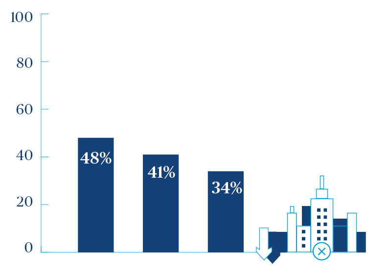

Enhancing performance: A whole life vision
Developing a strategy based on long-term outcomes
Ian Ballentine
Martin Pilling
The sales pitch for almost any infrastructure project does not start with the budget, the timescales or the build quality, but the way it could change our lives.
Take the UK’s three big Hs: Heathrow, Hinkley Point C and High Speed 2. While the construction industry sees these as tantalising mega projects, politicians back them because they play a part in making Britain an internationally competitive, energy secure and better-connected country. Ultimately, our goal is to trade and travel effectively, to keep the lights on, and to spread economic growth to all parts of the UK.
These are the outcomes we set out to achieve through infrastructure, so why do we so often lose sight of them during delivery?
When we get the green light to proceed with infrastructure programmes, it is too easy to focus on the tangible outputs – the practical completion of construction work – rather than sticking to our belief that the outcomes for the economy and society are what matter most.
Where am I now, where do I want to be?
The outcomes of infrastructure should be set by Government. We need a clear long-term vision for infrastructure in place, to which industry can respond.
But the onus for change does not lie with Government alone. The sector needs to adopt progressive delivery models such as the ICE’s Project 13 and the IPA’s Project Routemap – this requires a change of mindset. But we need to avoid organisations building these models on top of their processes as a tick box exercise, this just exacerbates the problem.
We need to think about infrastructure programmes not as a single major event, but as a means to deliver outcomes. Instead of diving deep into a civil engineering solution at the outset, infrastructure clients should form their strategy around the questions: How do we deliver the outcome? What do we have now and what do we need to achieve it? What legacy do we want to leave in the process?
Outcomes should be the foundation of our business cases, revenue structures, and models for building and operating the asset. Setting a strategy is about ensuring those outcomes remain the focus of all we do throughout an asset’s lifetime.”
Infrastructure is for life, not just for completion: a whole-life model If our goal in delivering infrastructure is to serve customers and UK plc long into the future, we need to plan for an asset’s whole life. Not only how we deliver it for the next five years, but how we will operate, maintain, replace and potentially decommission it over the next 20 years, 50 years or more.
Top 3 reasons why major programmes fail:

- 48% believe insufficient time spent in the planning stages, in the UK this rises to 71%
- 41% claim poor governance set up/inappropriate client structure
- 34% felt a lack of clarity on accountabilities/decision making processes
Today, the vast majority of contracts for major infrastructure programmes end at handover and then stop. Too often, the operator has an incomplete picture of their asset and its records. This is not the fault of any organisation in particular – it is a fundamental problem with the current industry model. Even for PPP projects which last 25 years, investors may be incentivised to defer investment towards the end of their contract when they are soon to hand back the asset.
Think strategy, think asset management strategy
A key part of the solution is thinking differently about asset management. Today, asset management is typically conceived as the responsibility for maintenance which starts at completion. Instead, it should become a strategic discipline, integrating decisions across the lifetime of an infrastructure asset. The asset management strategy of the future will determine how to deploy capital and operational expenditure, what balance is most efficient over the asset’s lifetime, and what investment is needed and at which point in the lifecycle.
Asset management becomes an integrating activity which unites programme management, project management, handover, operation and maintenance and future investment planning.
We will not make this transition overnight, but we are starting to see change. 49 percent of UK infrastructure leaders we surveyed believed that creating asset management capability would improve the sectors performance against just 24 percent globally.
In the UK, stakeholders responsible for the operation, management and maintenance are more often getting a seat at the table during the early stages of major programmes. This comes more naturally where the delivery organisation and the asset owner are the same. But HS2, for example, has already appointed a chief operating officer, some eight years before the first trains start running. Programmes such as this are also starting to create technology platforms that will better connect design, delivery and operation.
Shaping the right structure
Giving a strong voice to the asset operator is important, but it is not only the board and leadership but the whole organisation that needs to be set up to fulfil the strategy.
Organisational structure is a fundamental part of a client’s strategy. For example, where should the power base and accountability lie in the client organisation – in the programme or in corporate functions like procurement, commercial and controls? For a mature client organisation – like a water company or Network Rail – it makes sense to put the power in the programme, as the support and programme functions are already well established and therefore the accountability can be put directly into the programme. For a less mature or new organisation – it may be a better strategy to put power into the support functions so they have clear accountability and control for their elements, and then as the organisation/programme matures, the power can be shifted into the programme.
Decisions on the shape of the client organisation should go hand in hand with the procurement and supply chain strategy. This too must be geared around outcomes.
Traditionally, we procure based mainly on price and capability. Price is the easiest lever through which to control the contract and hold the supply chain to account and act as a proxy for value, so it tends to dominate. But if we want the supply chain to be longterm partners helping us to achieve the right outcomes, we need to give greater weight to capability, but also build in behaviour. We need to measure whether the supply chain helps us deliver not only an asset, but socio-economic or legacy outcomes. We need to know that partners can transition with us through the future stages of the programme and into operation.
This does not mean we de-prioritise cost – far from it – it means we need greater engagement between client and supply throughout the lifecycle, to define and actively drive value rather than relying only on cost and contractual clauses.
Getting on the right track
To get the outcomes we want from infrastructure, it is crucial that we embed them at the heart of infrastructure programmes and portfolios. Clients can lead this change by spending time to create the strategy early on based on whole-life value, which integrates programmes and asset management, and designs the client organisation and supply chain as a whole. Under this new model, we stand a far better chance of fulfilling the potential of infrastructure.
This article is part of 'Enhancing the performance of infrastructure programmes'
Go to the main page
Martin Pilling
Head of Asset Management
e: [email protected]